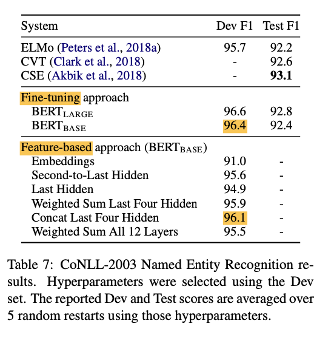

The Paper outlines number of ablation studies that were done to test the relative importance of each aspect of the model.
Effect of Pre-training Tasks: The main contribution by this paper is the argument of the benefit of using a bidirectionally pre-trained transformer architecture. This was achieved via a masked language model with the MASK token, as well as implementing “next sentence prediction” (NSP). The ablation study shows the importance for a few NLP tasks which require MLM and NSP. The results of this study are shown in table 5.
Effect of Model Size: Here the team shows that model size does have a significant effect not only on large scale tasks (language translation), but also on small scale tasks (provided the model has been sufficiently trained). This is probably in part due to the fundamental benefit of a solid language model, pre-trained bidirectionally.
Feature-based approach with BERT: Feature based approaches have the benefit of pre-computing an expensive representation while running individual experiments on cheaper models derived from the representation. Although the details of BERT in the paper were shown against the fine-tuning approach, table 7 shows the feature-based approach is only 0.3 F1 behind fine-tuning the entire model, demonstrating the effectiveness of both approaches.

Conclusion
BERT has not only shown impressive results with the power of bi-directional pre-training, the model has so far stood the test of time and has generated strong interest in the community. It is exciting to see how these strong language models can perform so powerfully on these NLP tasks, and I’m looking forward to how the field will move forward.